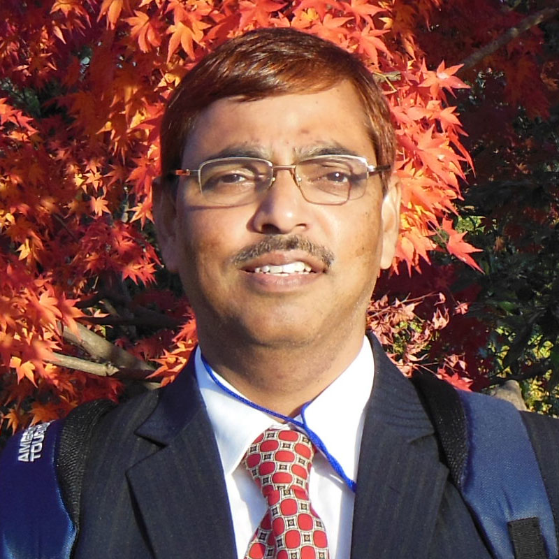
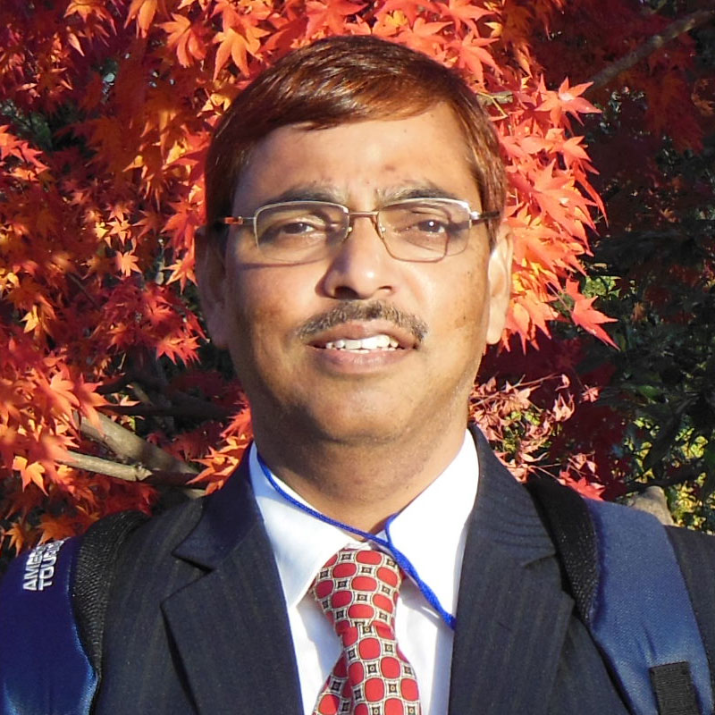

The Group Head
The Group Head
Professor Udai P. Singh, Sr Professor
Udai P Singh has nearly 25 years of experience in teaching and research. After completing his Ph D from Banaras Hindu University, Varanasi (1993), he joined Global Solar Energy (India) Ltd, Gurgaon to work on the process development and production of CdTe based thin film solar cells. During that period he also got the training at First Solar Inc. USA. In 2000 he joined the Institute of Energy Conversion, University of Delaware, USA as Limited Time Researcher and worked on the processes development of flexible CIGS based thin film solar cells. He joined KIIT in December 2002 as a faulty and currently he is Sr. Prof in the School. During his stay at KIIT he has been invited as Visiting Consultant to Industrial Technological Research Institute (ITRI), Hsinchu, Taiwan in 2008 and 2009. Dr Singh has developed a good research facility in the area of thin film PV from several research funding form DST, DRDO, MNRE etc . Dr. Udai P Singh, Sr. Professor in the School of Electronics Engineering, KIIT Deemed to be University has participated and completed the Leadership Academician Program sponsored by MHRD, Govt of India from 23rd Sept to 5th October 2019 at Banaras Hindu University (BHU), Varanasi and from 7th Oct. to 12th October 2019 at Nanyang Technological University (NTU), Singapore. In all, 25 participants were selected from all over India to participate in this program.